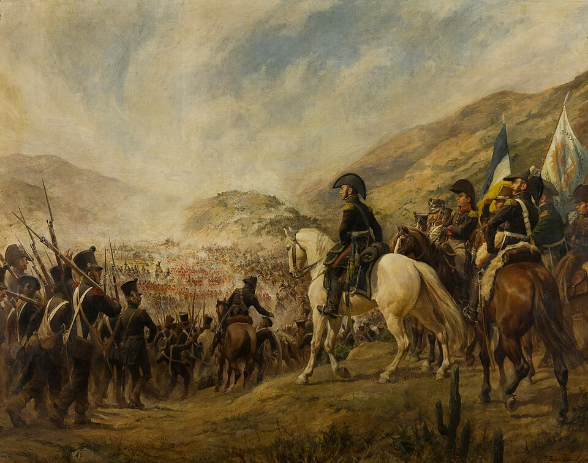

San Martín arrolla a los realistas en la cuesta de Chacabuco y abre el camino de Santiago
El Ejército de los Andes, del general San Martín, ha cruzado la cordillera por los pasos de Los Patos y Uspallata y deshecho hoy a las fuerzas del rey en la cuesta de Chacabuco. Las columnas de Soler y de O'Higgins decidieron la jornada; el gobernador Marcó del Pont huye y Santiago queda abierta. El paso de un ejército por sobre los Andes ya es leyenda.

En las faldas de la cuesta de Chacabuco, al norte de Santiago, el Ejército de los Andes ha deshecho esta mañana a las fuerzas del rey. Descolgados apenas de la cordillera, los soldados del general don José de San Martín cayeron sobre la posición realista antes de que el enemigo completara su despliegue: la división del brigadier Soler maniobró por la izquierda para cortarle la retirada, mientras la del general O'Higgins, impaciente, cargó de frente cuesta arriba contra la fusilería. En pocas horas, la línea del rey se quebró y huyó en desbandada, dejando el campo, los cañones y el camino de la capital enteramente abierto.
La hazaña no está tanto en la batalla como en el camino que a ella condujo. Cerca de cinco mil hombres cruzaron los Andes por dos pasos distantes, el de Los Patos y el de Uspallata, para reunirse del otro lado como si un solo reloj los gobernara. Subieron por sendas de vértigo, con miles de mulas y de caballos, arreando ganado en pie y llevando los cañones desarmados a lomo de bestia, pieza por pieza, sobre precipicios donde un mal paso era la muerte. Muchos animales quedaron en las cumbres, y muchos hombres padecieron el mal de las alturas. Y sin embargo, a la hora fijada, el ejército entero estaba abajo.
Conviene recordar de dónde viene este general. Hace cuatro años, este mismo diario lo despidió sobre las barrancas del Paraná, cuando sus granaderos batían por primera vez al rey en San Lorenzo; desde entonces no ha dejado de crecer su idea, tan simple de enunciar como difícil de ejecutar: que la libertad de estas provincias no está segura mientras Lima siga siendo bastión del poder español. Nombrado gobernador de Cuyo, hizo de Mendoza una fragua: fundió campanas para vaciar cañones, vistió y disciplinó un ejército con la paciencia de siempre, y en lugar de aguardar al realista en su tierra, resolvió ir a buscarlo cruzando la montaña más alta del mundo conocido.
De la jornada corren ya los relatos que hacen a la fama de los ejércitos. Dicen que O'Higgins, viendo peligrar la acción, se lanzó cuesta arriba a la cabeza de sus batallones sin aguardar que la maniobra de Soler se cerrara del todo, y que su arrojo decidió el trance. Los realistas dejaron centenares de muertos y de prisioneros en la pendiente. En Santiago, cuentan, cundió el pánico apenas llegaron los fugitivos: el gobernador Marcó del Pont, que solía prometer escarmientos terribles a los insurgentes, ha huido de la capital a toda brida rumbo al puerto, buscando embarcarse antes de que los patriotas entren en la ciudad.
¿Qué significa este descenso de un ejército desde las nubes? Chile, que parecía firmemente sujeto a la Corona, ha quedado de un golpe a merced de los libertadores, y Santiago abrirá sus puertas de un día para otro. Mas quien conozca a este general sabe que Chacabuco no es un fin, sino una puerta: quien cruza una cordillera para liberar a un pueblo vecino no lo hace por el vecino solamente. Detrás de Chile se adivina el mar, y detrás del mar, el Perú. El diario apenas se atreve a seguir con la mirada tan lejos; pero anota que el hombre que planeó esta montaña ya piensa, sin duda, en la próxima.